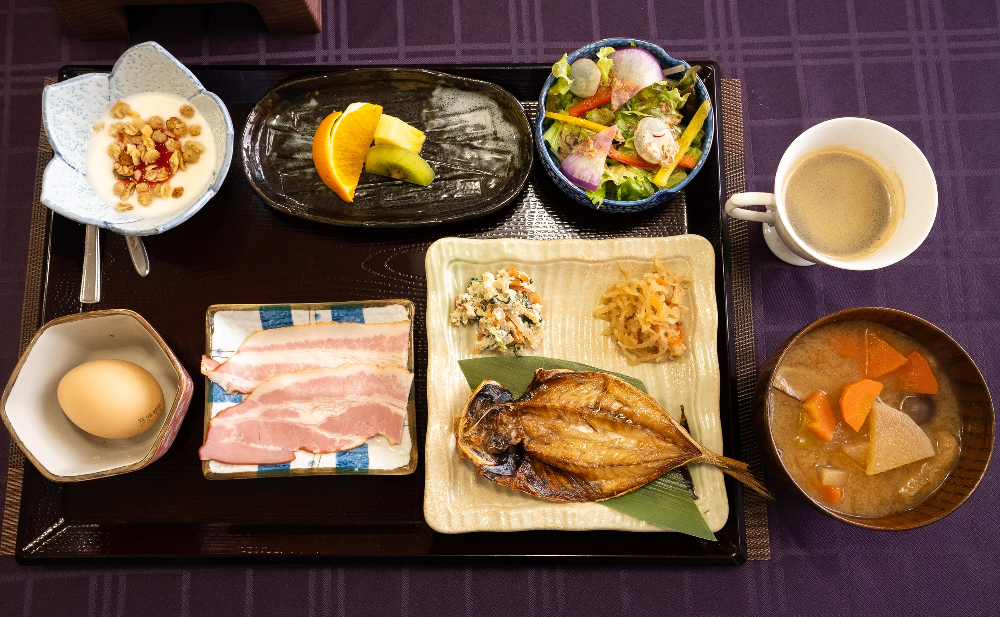

箱根の名物
HAKONE DINING
当館自慢
箱根和食 朝食・夕食
Japanese Breakfast & Dinner
箱根の豊かな自然に囲まれた当館では、和の心を大切にした朝食と夕食をお楽しみいただけます。箱根の地元食材をふんだんに使用した、心温まる和食の数々をご堪能ください。
提供時間
夕食・朝食ともに毎日
朝食
箱根和食
Japanese Breakfast
箱根の朝を彩る和食の数々。新鮮な地元食材を使用した心温まる朝食をお楽しみください。職人が心を込めて調理した、箱根の恵みを感じられる和食の朝食です。
箱根産食材
職人手作り

夕食
箱根和食
Japanese Dinner
箱根の豊かな自然の恵みを活かした和食の夕食。地元の新鮮な食材を使用した、心温まる和食の数々をお楽しみください。季節の食材をふんだんに使用した、箱根ならではの和食の夕食です。
箱根の名物
和食の数々
レストランのご案内
RESTAURANT INFORMATION

当館のレストランは、ゆったりとした大広間でお食事をお楽しみいただける会場でございます。
和の趣を感じる落ち着いた雰囲気の中、開放的で明るい空間が皆様をお迎えいたします。
ご家族やご友人と共に、心温まるひとときをお過ごしください。朝夕の和食では、
箱根の旬の食材をふんだんに使用した多彩な料理をご用意しております。
営業時間
朝食 7:00〜9:00
夕食 17:00〜20:00
夕食 17:00〜20:00
席数
32席
スタイル
箱根和食